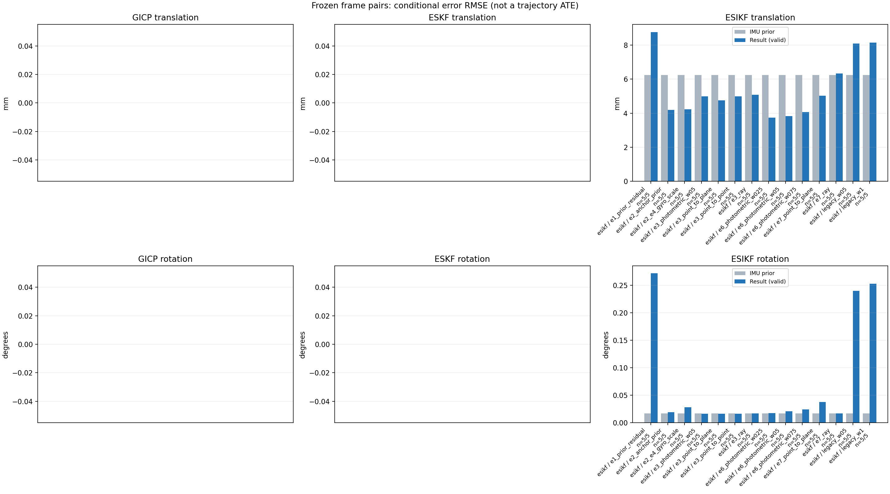

20261015_112553_up · depth=disparity_cache · cache=6becf1e2ffbfcf4aa3b9
模型视差：/home/ubuntu22/slam/SIO_SLAM/models/tensorrt/disp_896x448_fp16.plan；engine SHA256=604cf6ac1f705c877260711730dd5d2d58c2a21f3020c03c668401ef7fb1e768。输入为生产裁剪与光照处理后的 RGB 0..255；此实验使用原始浮点像素视差，不应用完整前端的邻域视差后处理。
原始 ONNX SHA256：e9f49736a65d68d06681add463866b6defdf78fdd7f4f50f6cc941b682fdc0bc。
代价体图改写验证：ONNX Runtime 固定随机特征输入，最大绝对误差 0；该项检查图改写，完整模型精度仍需由录制数据评估。
配准代码版本：744ac2d993ae629b0cc44a3b1d995e04ab4fad48；观测生成版本：744ac2d993ae629b0cc44a3b1d995e04ab4fad48。
固定图像对与纯 IMU 先验；ESKF 回放固定 GICP 观测，ESIKF 直接读取点云。真值只用于此报告。
同时查看 converged 与 solver_status：上游默认 Stereo 在 max_iter / stopped_at_minimum 时也可能置 converged=true。valid 表示输入检查通过，不表示精度提升。欧氏 GICP 未提供独立的点距 RMSE，该列显示 NaN。
误差按每对图像的锚点计算，单位 m / degrees。此处 RMSE 不是全序列 ATE；末帧受同一锚点条件约束。NIS 与条件马氏距离是诊断量，少量相关图像对不能用于宣称协方差已校准。
全部指标 CSV · R / P / K 矩阵 CSV · Stereo 求解逐轮 CSV · ESIKF 逐轮 CSV · 配置快照 · 矢量图
unflagged 排除纯惯性先验平移误差超过 50 mm 的图像对；whitened 为误差按协方差白化后的每自由度均值，协方差与实际误差相符时约为 1。
| stage | method | variant | valid | total | result_translation_rmse_m | result_rotation_rmse_deg | result_translation_median_m | result_rotation_median_deg | result_translation_rmse_unflagged_m | result_rotation_rmse_unflagged_deg | improved_translation | improved_rotation | posterior_whitened_by_P_rot_mean | posterior_whitened_by_P_trans_mean |
|---|---|---|---|---|---|---|---|---|---|---|---|---|---|---|
| esikf | esikf | e1_prior_residual | 5 | 5 | 0.0087617 | 0.27205 | 0.0092679 | 0.13769 | 0.0087617 | 0.27205 | 1 | 0 | 146.1 | 84.965 |
| esikf | esikf | e2_anchor_prior | 5 | 5 | 0.0041992 | 0.019409 | 0.0031299 | 0.012861 | 0.0041992 | 0.019409 | 2 | 2 | 28.997 | 47.426 |
| esikf | esikf | e2_e4_gyro_scale | 5 | 5 | 0.0042319 | 0.028128 | 0.0033316 | 0.014205 | 0.0042319 | 0.028128 | 2 | 1 | 29.005 | 46.276 |
| esikf | esikf | e3_photometric_w05 | 5 | 5 | 0.0049922 | 0.016157 | 0.0018416 | 0.011509 | 0.0049922 | 0.016157 | 3 | 3 | 18.503 | 6.7055 |
| esikf | esikf | e3_point_to_plane | 5 | 5 | 0.0047555 | 0.016287 | 0.0018494 | 0.011515 | 0.0047555 | 0.016287 | 3 | 3 | 18.431 | 6.2807 |
| esikf | esikf | e3_point_to_point | 5 | 5 | 0.004988 | 0.016158 | 0.0018415 | 0.011507 | 0.004988 | 0.016158 | 3 | 3 | 18.504 | 6.7048 |
| esikf | esikf | e3_ray | 5 | 5 | 0.005079 | 0.017048 | 0.0018898 | 0.012774 | 0.005079 | 0.017048 | 2 | 2 | 18.434 | 6.2695 |
| esikf | esikf | e6_photometric_w025 | 5 | 5 | 0.0037309 | 0.017525 | 0.0018016 | 0.014524 | 0.0037309 | 0.017525 | 3 | 2 | 20.178 | 13.954 |
| esikf | esikf | e6_photometric_w05 | 5 | 5 | 0.003829 | 0.020698 | 0.002256 | 0.014615 | 0.003829 | 0.020698 | 2 | 1 | 22.469 | 23.71 |
| esikf | esikf | e6_photometric_w075 | 5 | 5 | 0.0040568 | 0.024528 | 0.0030479 | 0.014391 | 0.0040568 | 0.024528 | 2 | 1 | 25.297 | 34.928 |
| esikf | esikf | e7_point_to_plane | 5 | 5 | 0.0050306 | 0.037846 | 0.0016761 | 0.022269 | 0.0050306 | 0.037846 | 3 | 1 | 24.083 | 13.618 |
| esikf | esikf | e7_ray | 5 | 5 | 0.0063357 | 0.016753 | 0.0049401 | 0.011933 | 0.0063357 | 0.016753 | 2 | 3 | 18.649 | 21.156 |
| esikf | esikf | legacy_w05 | 5 | 5 | 0.0080762 | 0.24005 | 0.0078418 | 0.10192 | 0.0080762 | 0.24005 | 1 | 0 | 55.371 | 35.693 |
| esikf | esikf | legacy_w1 | 5 | 5 | 0.008144 | 0.25318 | 0.0078497 | 0.10221 | 0.008144 | 0.25318 | 1 | 0 | 122.67 | 72.691 |

| stage | case | method | variant | status | solver_status | inliers | converged | covariance_convention | covariance_from_hessian | fitness | registration_rmse_m | prior_trans_error_m | result_trans_error_m | prior_rot_error_deg | result_rot_error_deg | prior_flagged | R_rot_trace_rad2 | R_pos_trace_m2 | nis_regularized | posterior_whitened_by_P_rot | posterior_whitened_by_P_trans |
|---|---|---|---|---|---|---|---|---|---|---|---|---|---|---|---|---|---|---|---|---|---|
| esikf | static_start | esikf | legacy_w1 | updated | converged | 13064 | 1 | 1 | 0 | 0 | 0.00010829 | 0.0028367 | 0.0066323 | 0.069937 | 0 | 1.9134e-07 | 1.005e-06 | nan | 5.6731 | 8.9833 | |
| esikf | static_start | esikf | legacy_w05 | updated | converged | 13064 | 1 | 1 | 0 | 0 | 0.00010829 | 0.0028402 | 0.0066323 | 0.069963 | 0 | 3.8238e-07 | 2.009e-06 | nan | 2.8423 | 4.5044 | |
| esikf | static_start | esikf | e1_prior_residual | updated_not_converged | max_iterations | 13169 | 0 | 1 | 0 | 0 | 0.00010829 | 0.0064632 | 0.0066323 | 0.12888 | 0 | 1.8611e-07 | 9.1946e-07 | nan | 21.196 | 48.331 | |
| esikf | static_start | esikf | e2_anchor_prior | updated | converged | 13059 | 1 | 1 | 0 | 0 | 0.00010829 | 0.00029156 | 0.0066323 | 0.0078414 | 0 | 1.9193e-07 | 1.0124e-06 | nan | 2.084 | 0.86246 | |
| esikf | static_start | esikf | e2_e4_gyro_scale | updated | converged | 13059 | 1 | 1 | 0 | 0 | 0.00010829 | 0.00029157 | 0.0066323 | 0.0078415 | 0 | 1.9193e-07 | 1.0124e-06 | nan | 2.0838 | 0.86243 | |
| esikf | static_start | esikf | e6_photometric_w075 | updated | converged | 13059 | 1 | 1 | 0 | 0 | 0.00010829 | 0.00026084 | 0.0066323 | 0.007698 | 0 | 2.5585e-07 | 1.3496e-06 | nan | 1.6982 | 0.63109 | |
| esikf | static_start | esikf | e6_photometric_w05 | updated | converged | 13059 | 1 | 1 | 0 | 0 | 0.00010829 | 0.000225 | 0.0066323 | 0.0075605 | 0 | 3.8357e-07 | 2.0237e-06 | nan | 1.2856 | 0.41675 | |
| esikf | static_start | esikf | e6_photometric_w025 | updated | converged | 13059 | 1 | 1 | 0 | 0 | 0.00010829 | 0.00017969 | 0.0066323 | 0.0073488 | 0 | 7.6594e-07 | 4.0434e-06 | nan | 0.84191 | 0.2216 | |
| esikf | static_start | esikf | e7_ray | updated | converged | 13059 | 1 | 1 | 0 | 0 | 0.00010829 | 0.00040849 | 0.0066323 | 0.011933 | 0 | 0.016513 | 2.0739e-05 | nan | 1.2979 | 0.94096 | |
| esikf | static_start | esikf | e7_point_to_plane | updated | converged | 13058 | 1 | 1 | 0 | 0 | 0.00010829 | 0.00068377 | 0.0066323 | 0.022269 | 0 | 1.2857e-06 | 5.0544e-06 | nan | 5.1918 | 2.9075 | |
| esikf | static_start | esikf | e3_point_to_point | updated | converged | 13059 | 1 | 1 | 0 | 0 | 0.00010829 | 0.0001145 | 0.0066323 | 0.0066975 | 0 | 1.0509e-05 | 5.9893e-05 | nan | 0.40472 | 0.066784 | |
| esikf | static_start | esikf | e3_photometric_w05 | updated | converged | 13059 | 1 | 1 | 0 | 0 | 0.00010829 | 0.00011446 | 0.0066323 | 0.0066961 | 0 | 1.0498e-05 | 5.9984e-05 | nan | 0.40456 | 0.06674 | |
| esikf | static_start | esikf | e3_ray | updated | converged | 13059 | 1 | 1 | 0 | 0 | 0.00010829 | 0.00011144 | 0.0066323 | 0.0066905 | 0 | 1.4512 | 0.0018068 | nan | 0.38262 | 0.061425 | |
| esikf | static_start | esikf | e3_point_to_plane | updated | converged | 13059 | 1 | 1 | 0 | 0 | 0.00010829 | 0.00012622 | 0.0066323 | 0.0070907 | 0 | 6.3305e-05 | 0.00015245 | nan | 0.43209 | 0.078735 | |
| esikf | sync_motion | esikf | legacy_w1 | updated | converged | 12495 | 1 | 1 | 0 | 0 | 0.00031706 | 0.010054 | 0.012913 | 0.52452 | 0 | 1.9865e-07 | 9.3256e-07 | nan | 394.95 | 110.61 | |
| esikf | sync_motion | esikf | legacy_w05 | updated | converged | 12482 | 1 | 1 | 0 | 0 | 0.00031706 | 0.0097584 | 0.012913 | 0.49275 | 0 | 3.9896e-07 | 1.8742e-06 | nan | 168.6 | 51.889 | |
| esikf | sync_motion | esikf | e1_prior_residual | updated_not_converged | max_iterations | 12501 | 0 | 1 | 0 | 0 | 0.00031706 | 0.010047 | 0.012913 | 0.54603 | 0 | 1.9864e-07 | 9.3891e-07 | nan | 444.05 | 109.82 | |
| esikf | sync_motion | esikf | e2_anchor_prior | updated_not_converged | max_iterations | 12331 | 0 | 1 | 0 | 0 | 0.00031706 | 0.0031299 | 0.012913 | 0.012861 | 0 | 2.0634e-07 | 1.0051e-06 | nan | 8.2256 | 20.557 | |
| esikf | sync_motion | esikf | e2_e4_gyro_scale | updated_not_converged | max_iterations | 12325 | 0 | 1 | 0 | 0 | 0.00031706 | 0.0033316 | 0.012913 | 0.047356 | 0 | 2.0695e-07 | 1.0134e-06 | nan | 13.411 | 16.898 | |
| esikf | sync_motion | esikf | e6_photometric_w075 | updated_not_converged | max_iterations | 12325 | 0 | 1 | 0 | 0 | 0.00031706 | 0.0030479 | 0.012913 | 0.037782 | 0 | 2.7624e-07 | 1.3559e-06 | nan | 7.5355 | 11.403 | |
| esikf | sync_motion | esikf | e6_photometric_w05 | updated | converged | 12339 | 1 | 1 | 0 | 0 | 0.00031706 | 0.002256 | 0.012913 | 0.026313 | 0 | 4.1268e-07 | 2.0253e-06 | nan | 3.0704 | 4.6872 | |
| esikf | sync_motion | esikf | e6_photometric_w025 | updated | converged | 12342 | 1 | 1 | 0 | 0 | 0.00031706 | 0.0015655 | 0.012913 | 0.014524 | 0 | 8.2551e-07 | 4.0984e-06 | nan | 0.68603 | 1.3862 | |
| esikf | sync_motion | esikf | e7_ray | updated | converged | 12348 | 1 | 1 | 0 | 0 | 0.00031706 | 0.0049401 | 0.012913 | 0.0093036 | 0 | 0.0081749 | 1.0878e-05 | nan | 0.21593 | 15.05 | |
| esikf | sync_motion | esikf | e7_point_to_plane | updated | converged | 12431 | 1 | 1 | 0 | 0 | 0.00031706 | 0.0016404 | 0.012913 | 0.071289 | 0 | 1.302e-06 | 4.6801e-06 | nan | 22.851 | 4.538 | |
| esikf | sync_motion | esikf | e3_point_to_point | updated | converged | 12347 | 1 | 1 | 0 | 0 | 0.00031706 | 0.00036884 | 0.012913 | 0.011507 | 0 | 1.1345e-05 | 6.0525e-05 | nan | 0.38654 | 0.03328 | |
| esikf | sync_motion | esikf | e3_photometric_w05 | updated | converged | 12347 | 1 | 1 | 0 | 0 | 0.00031706 | 0.0003685 | 0.012913 | 0.011509 | 0 | 1.1335e-05 | 6.0625e-05 | nan | 0.38671 | 0.033196 | |
| esikf | sync_motion | esikf | e3_ray | updated | converged | 12342 | 1 | 1 | 0 | 0 | 0.00031706 | 0.00039799 | 0.012913 | 0.012774 | 0 | 0.7647 | 0.001116 | nan | 0.44312 | 0.031948 | |
| esikf | sync_motion | esikf | e3_point_to_plane | updated | converged | 12347 | 1 | 1 | 0 | 0 | 0.00031706 | 0.00032403 | 0.012913 | 0.011515 | 0 | 6.537e-05 | 0.0001531 | nan | 0.35099 | 0.045218 | |
| esikf | main_motion | esikf | legacy_w1 | updated | converged | 15822 | 1 | 1 | 0 | 0 | 0.0018857 | 0.0075878 | 0.015355 | 0.15666 | 0 | 1.4573e-07 | 1.0294e-06 | nan | 38.62 | 61.481 | |
| esikf | main_motion | esikf | legacy_w05 | updated | converged | 15822 | 1 | 1 | 0 | 0 | 0.0018857 | 0.0075831 | 0.015355 | 0.1567 | 0 | 2.9128e-07 | 2.0579e-06 | nan | 19.322 | 30.718 | |
| esikf | main_motion | esikf | e1_prior_residual | updated_not_converged | max_iterations | 15832 | 0 | 1 | 0 | 0 | 0.0018857 | 0.0092679 | 0.015355 | 0.17566 | 0 | 1.4463e-07 | 1.016e-06 | nan | 52.777 | 93.104 | |
| esikf | main_motion | esikf | e2_anchor_prior | updated | converged | 15819 | 1 | 1 | 0 | 0 | 0.0018857 | 0.0020869 | 0.015355 | 0.014229 | 0 | 1.4632e-07 | 1.034e-06 | nan | 56.848 | 14.955 | |
| esikf | main_motion | esikf | e2_e4_gyro_scale | updated | converged | 15818 | 1 | 1 | 0 | 0 | 0.0018857 | 0.0020884 | 0.015355 | 0.014205 | 0 | 1.4637e-07 | 1.0351e-06 | nan | 53.314 | 14.886 | |
| esikf | main_motion | esikf | e6_photometric_w075 | updated | converged | 15820 | 1 | 1 | 0 | 0 | 0.0018857 | 0.0019846 | 0.015355 | 0.014391 | 0 | 1.9512e-07 | 1.3782e-06 | nan | 54.059 | 10.044 | |
| esikf | main_motion | esikf | e6_photometric_w05 | updated | converged | 15822 | 1 | 1 | 0 | 0 | 0.0018857 | 0.0018858 | 0.015355 | 0.014615 | 0 | 2.9206e-07 | 2.061e-06 | nan | 54.84 | 6.2371 | |
| esikf | main_motion | esikf | e6_photometric_w025 | updated | converged | 15824 | 1 | 1 | 0 | 0 | 0.0018857 | 0.0018016 | 0.015355 | 0.014843 | 0 | 5.8177e-07 | 4.0913e-06 | nan | 55.441 | 3.4549 | |
| esikf | main_motion | esikf | e7_ray | updated | converged | 15829 | 1 | 1 | 0 | 0 | 0.0018857 | 0.0028074 | 0.015355 | 0.015289 | 0 | 0.0093839 | 1.526e-05 | nan | 55.668 | 9.665 | |
| esikf | main_motion | esikf | e7_point_to_plane | updated | converged | 15831 | 1 | 1 | 0 | 0 | 0.0018857 | 0.0016761 | 0.015355 | 0.015168 | 0 | 1.0429e-06 | 4.4882e-06 | nan | 54.666 | 3.7999 | |
| esikf | main_motion | esikf | e3_point_to_point | updated | converged | 15840 | 1 | 1 | 0 | 0 | 0.0018857 | 0.0018415 | 0.015355 | 0.01529 | 0 | 7.9389e-06 | 5.9855e-05 | nan | 55.679 | 2.3837 | |
| esikf | main_motion | esikf | e3_photometric_w05 | updated | converged | 15840 | 1 | 1 | 0 | 0 | 0.0018857 | 0.0018416 | 0.015355 | 0.01529 | 0 | 7.9327e-06 | 5.9952e-05 | nan | 55.678 | 2.3839 | |
| esikf | main_motion | esikf | e3_ray | updated | converged | 15841 | 1 | 1 | 0 | 0 | 0.0018857 | 0.0018898 | 0.015355 | 0.015354 | 0 | 0.81201 | 0.0013698 | nan | 55.67 | 2.4581 | |
| esikf | main_motion | esikf | e3_point_to_plane | updated | converged | 15841 | 1 | 1 | 0 | 0 | 0.0018857 | 0.0018494 | 0.015355 | 0.015348 | 0 | 5.104e-05 | 0.00013263 | nan | 55.665 | 2.4027 | |
| esikf | main_motion_long | esikf | legacy_w1 | updated | converged | 16170 | 1 | 1 | 0 | 0 | 0.011977 | 0.010164 | 0.03152 | 0.10221 | 0 | 1.467e-07 | 1.146e-06 | nan | 155.99 | 99.716 | |
| esikf | main_motion_long | esikf | legacy_w05 | updated | converged | 16169 | 1 | 1 | 0 | 0 | 0.011977 | 0.01019 | 0.03152 | 0.10192 | 0 | 2.934e-07 | 2.2959e-06 | nan | 77.037 | 50.052 | |
| esikf | main_motion_long | esikf | e1_prior_residual | updated_not_converged | max_iterations | 16187 | 0 | 1 | 0 | 0 | 0.011977 | 0.0096751 | 0.03152 | 0.13769 | 0 | 1.4644e-07 | 1.1417e-06 | nan | 194.37 | 90.907 | |
| esikf | main_motion_long | esikf | e2_anchor_prior | updated_not_converged | max_iterations | 16148 | 0 | 1 | 0 | 0 | 0.011977 | 0.0072899 | 0.03152 | 0.03726 | 0 | 1.483e-07 | 1.1783e-06 | nan | 75.516 | 160.81 | |
| esikf | main_motion_long | esikf | e2_e4_gyro_scale | updated_not_converged | max_iterations | 16142 | 0 | 1 | 0 | 0 | 0.011977 | 0.0072947 | 0.03152 | 0.037206 | 0 | 1.4835e-07 | 1.1784e-06 | nan | 73.908 | 158.79 | |
| esikf | main_motion_long | esikf | e6_photometric_w075 | updated_not_converged | max_iterations | 16134 | 0 | 1 | 0 | 0 | 0.011977 | 0.0070482 | 0.03152 | 0.035104 | 0 | 1.9706e-07 | 1.5579e-06 | nan | 60.595 | 121.49 | |
| esikf | main_motion_long | esikf | e6_photometric_w05 | updated_not_converged | max_iterations | 16140 | 0 | 1 | 0 | 0 | 0.011977 | 0.0068404 | 0.03152 | 0.03284 | 0 | 2.9447e-07 | 2.3164e-06 | nan | 50.28 | 83.411 | |
| esikf | main_motion_long | esikf | e6_photometric_w025 | updated_not_converged | max_iterations | 16166 | 0 | 1 | 0 | 0 | 0.011977 | 0.0065546 | 0.03152 | 0.030824 | 0 | 5.8258e-07 | 4.5766e-06 | nan | 41.097 | 41.812 | |
| esikf | main_motion_long | esikf | e7_ray | updated_not_converged | max_iterations | 16252 | 0 | 1 | 0 | 0 | 0.011977 | 0.011342 | 0.03152 | 0.030312 | 0 | 0.004384 | 4.5675e-05 | nan | 34.322 | 30.429 | |
| esikf | main_motion_long | esikf | e7_point_to_plane | updated | converged | 16265 | 1 | 1 | 0 | 0 | 0.011977 | 0.0099261 | 0.03152 | 0.036088 | 0 | 9.3325e-07 | 4.155e-06 | nan | 35.511 | 31.625 | |
| esikf | main_motion_long | esikf | e3_point_to_point | updated | converged | 16199 | 1 | 1 | 0 | 0 | 0.011977 | 0.0087731 | 0.03152 | 0.029633 | 0 | 7.892e-06 | 6.651e-05 | nan | 34.298 | 2.9789 | |
| esikf | main_motion_long | esikf | e3_photometric_w05 | updated | converged | 16200 | 1 | 1 | 0 | 0 | 0.011977 | 0.0087849 | 0.03152 | 0.029631 | 0 | 7.8808e-06 | 6.6526e-05 | nan | 34.297 | 2.9852 | |
| esikf | main_motion_long | esikf | e3_ray | updated | converged | 16215 | 1 | 1 | 0 | 0 | 0.011977 | 0.0088736 | 0.03152 | 0.031578 | 0 | 0.44905 | 0.004025 | nan | 33.96 | 2.0723 | |
| esikf | main_motion_long | esikf | e3_point_to_plane | updated | converged | 16217 | 1 | 1 | 0 | 0 | 0.011977 | 0.0080282 | 0.03152 | 0.029907 | 0 | 4.7405e-05 | 0.00013424 | nan | 33.973 | 2.3632 | |
| esikf | static_end | esikf | legacy_w1 | updated | converged | 20021 | 1 | 1 | 0 | 0 | 0.0068508 | 0.0078497 | 0.0034785 | 0.074086 | 0 | 6.4044e-08 | 7.2817e-07 | nan | 18.132 | 82.662 | |
| esikf | static_end | esikf | legacy_w05 | updated | converged | 20023 | 1 | 1 | 0 | 0 | 0.0068508 | 0.0078418 | 0.0034785 | 0.074018 | 0 | 1.2801e-07 | 1.4549e-06 | nan | 9.0547 | 41.3 | |
| esikf | static_end | esikf | e1_prior_residual | updated_not_converged | max_iterations | 20021 | 0 | 1 | 0 | 0 | 0.0068508 | 0.0078497 | 0.0034785 | 0.074086 | 0 | 6.4044e-08 | 7.2817e-07 | nan | 18.132 | 82.662 | |
| esikf | static_end | esikf | e2_anchor_prior | updated_not_converged | max_iterations | 19975 | 0 | 1 | 0 | 0 | 0.0068508 | 0.0045592 | 0.0034785 | 0.0081097 | 0 | 6.4594e-08 | 7.417e-07 | nan | 2.3102 | 39.943 | |
| esikf | static_end | esikf | e2_e4_gyro_scale | updated_not_converged | max_iterations | 19975 | 0 | 1 | 0 | 0 | 0.0068508 | 0.0045592 | 0.0034785 | 0.0081097 | 0 | 6.4594e-08 | 7.417e-07 | nan | 2.3058 | 39.943 | |
| esikf | static_end | esikf | e6_photometric_w075 | updated_not_converged | max_iterations | 19972 | 0 | 1 | 0 | 0 | 0.0068508 | 0.004395 | 0.0034785 | 0.0090566 | 0 | 8.6154e-08 | 9.8986e-07 | nan | 2.5965 | 31.07 | |
| esikf | static_end | esikf | e6_photometric_w05 | updated | converged | 19986 | 1 | 1 | 0 | 0 | 0.0068508 | 0.0042211 | 0.0034785 | 0.010027 | 0 | 1.2911e-07 | 1.4823e-06 | nan | 2.8694 | 23.798 | |
| esikf | static_end | esikf | e6_photometric_w025 | updated | converged | 20003 | 1 | 1 | 0 | 0 | 0.0068508 | 0.0045723 | 0.0034785 | 0.010013 | 0 | 2.5698e-07 | 2.9394e-06 | nan | 2.8235 | 22.895 | |
| esikf | static_end | esikf | e7_ray | updated | converged | 20022 | 1 | 1 | 0 | 0 | 0.0068508 | 0.0062945 | 0.0034785 | 0.004659 | 0 | 0.034609 | 2.2191e-05 | nan | 1.7406 | 49.693 | |
| esikf | static_end | esikf | e7_point_to_plane | updated | converged | 19985 | 1 | 1 | 0 | 0 | 0.0068508 | 0.0046944 | 0.0034785 | 0.0071516 | 0 | 5.9547e-07 | 3.1772e-06 | nan | 2.1966 | 25.22 | |
| esikf | static_end | esikf | e3_point_to_point | updated | converged | 20018 | 1 | 1 | 0 | 0 | 0.0068508 | 0.0066253 | 0.0034785 | 0.004031 | 0 | 3.4939e-06 | 4.2777e-05 | nan | 1.7504 | 28.061 | |
| esikf | static_end | esikf | e3_photometric_w05 | updated | converged | 20018 | 1 | 1 | 0 | 0 | 0.0068508 | 0.0066256 | 0.0034785 | 0.0040307 | 0 | 3.4917e-06 | 4.2845e-05 | nan | 1.7504 | 28.058 | |
| esikf | static_end | esikf | e3_ray | updated | converged | 20018 | 1 | 1 | 0 | 0 | 0.0068508 | 0.0068189 | 0.0034785 | 0.0035009 | 0 | 3.8958 | 0.0023921 | nan | 1.7153 | 26.724 | |
| esikf | static_end | esikf | e3_point_to_plane | updated | converged | 20017 | 1 | 1 | 0 | 0 | 0.0068508 | 0.0067142 | 0.0034785 | 0.0036623 | 0 | 2.9151e-05 | 9.4361e-05 | nan | 1.7319 | 26.514 |